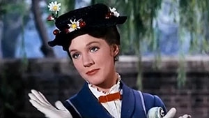

Poppins is the titular character in a series of children's books by P.L Travers. The series ran from 1934 all the way to 1988. The 1964 Disney film was so hated by Travers she vowed to never work with Disney again. The adaptation included songs, jokes, and animation segments, while the books were more serious in tone and direction. The books told life lessons with teachable moments about English society, while the movie's theme was more "appreciate your family". As for the film's star (played by Julie Andrews) Travers stated she was too nice, and too pretty. Despite the original creator's hatred, the movie did well, becoming Disney's highest earning film at that point, as well as 13 Academy Award nominations, winning 5 in total. The film version of Poppins is what this site is dedicated to. We'll be going over things which made her unique and memorable (and Bad) enough to still be remembered nearly 70 years later.
Unwanted Poppins in the home (Codename "Jolly Holiday") is more common than you think. The most important thing is to not panic. A Jolly Holiday is defined as Mary showing up when:
After making absolutely sure you have a Jolly Holiday, you *must* follow through with her programming. Failure to do so will cause an 80% chance of flipping all world Winds at once, which would make airplanes fall from the sky (as well as other things). Find a substitute for the Father, the Children, the Quirky Helper, and any other roles you can fill with short notice.
Follow through with the Trial Period, the Adventures, the Pigeon Scene, the Realization and the Conclusion. If needed, a DVD or digital copy of the film can be played alongside for reference. Make sure to watch her facial expressions for any hints of mistakes. She is tolerant, and can be placated with the afformentioned Rum Punch.
After successfully reaching the Conclusion, make sure to watch her fly off. She must be seen by at least 1 of those acting as "Children", and at most 0 of the "Parents". Failure to complete this step will cause Mary to replay all events.
Repeat all steps until the Wind returns to normal, Mary is nowhere in sight, and no other hints of magic can be dectected.
If you at all need help ridding yourself of a Jolly Holiday, "Emergency Jollies" can be purchased through our online store, located